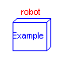
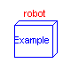
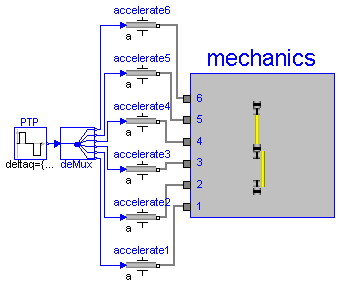

This package contains models of the robot r3 of the company Manutec. It is used to demonstrate in which way complex robot models should be built up by testing first the components of the model individually before composing them together. The following models are available:
axisType1 Test one axis (controller, motor, gearbox) of structure 1.
axisType2 Test one axis (controller, motor, gearbox) of structure 2.
inverseDynamics Test mechanical structure
(predefined joint angle time functions).
robot Test complete robot model.
The parameters of this robot have been determined by measurements in the laboratory of DLR. The measurement procedure is described in:
Tuerk S. (1990): Zur Modellierung der Dynamik von Robotern mit
rotatorischen Gelenken. Fortschrittberichte VDI, Reihe 8, Nr. 211,
VDI-Verlag 1990.
The robot model is described in detail in
Otter M. (1995): Objektorientierte Modellierung mechatronischer
Systeme am Beispiel geregelter Roboter. Dissertation,
Fortschrittberichte VDI, Reihe 20, Nr. 147, VDI-Verlag 1995.
This report can be downloaded as compressed postscript file
from: http://www.robotic.dlr.de/Martin.Otter/publications.html
Release Notes:
Copyright © 2000-2002, DLR.
The Modelica package is free software; it can be redistributed and/or modified under the terms of the Modelica license, see the license conditions and the accompanying disclaimer in the documentation of package Modelica in file "Modelica/package.mo".
ModelicaAdditions.MultiBody.Examples.Robots.r3.axisType1

The robot r3 has 2 different model structures of its axes. Axis type 1 is checked with this model. Simulate for 0.8 s.
encapsulated model axisType1
"Test one axis of r3 robot (controller, motor, gearbox) of structure 1."
import Modelica.Icons;
import Modelica.Constants;
import Modelica.Blocks.Sources;
import Modelica.Mechanics.Rotational;
import ModelicaAdditions.MultiBody.Examples.Robots.r3.Components;
extends Icons.Example;
output Real refq "reference joint angle in [deg]";
output Real q "actual joint angle in [deg]";
output Real eq "joint angle error in [deg]";
output Real refqd "reference joint angular velocity in [rad/s]";
output Real qd "actual joint angular velocity in [rad/s]";
output Real eqd "joint angular velocity error in [rad/s]";
constant Real pi=Constants.pi;
constant Real rad2deg=180/pi;
Components.AxisType1 axis1;
Sources.KinematicPTP PTP(
deltaq={pi/2},
qd_max={3},
qdd_max={50});
Rotational.Inertia load(J=5);
equation
connect(PTP.outPort, axis1.inPort_a_ref);
connect(axis1.flange, load.flange_a);
refq = axis1.phi_ref*rad2deg;
q = axis1.flange.phi*rad2deg;
eq = refq - q;
refqd = axis1.w_ref;
qd = der(axis1.flange.phi);
eqd = refqd - qd;
end axisType1;
ModelicaAdditions.MultiBody.Examples.Robots.r3.axisType2

The robot r3 has 2 different model structures of its axes. Axis type 2 is checked with this model. Simulate for 0.8 s.
encapsulated model axisType2
"Test one axis of r3 robot (controller, motor, gearbox) of structure 2."
import Modelica.Icons;
import Modelica.Constants;
import Modelica.Blocks.Sources;
import Modelica.Mechanics.Rotational;
import ModelicaAdditions.MultiBody.Examples.Robots.r3.Components;
extends Icons.Example;
output Real refq "reference joint angle in [deg]";
output Real q "actual joint angle in [deg]";
output Real eq "joint angle error in [deg]";
output Real refqd "reference joint angular velocity in [rad/s]";
output Real qd "actual joint angular velocity in [rad/s]";
output Real eqd "joint angular velocity error in [rad/s]";
constant Real pi=Constants.pi;
constant Real rad2deg=180/pi;
Components.AxisType2 axis2;
Rotational.Inertia load(J=1);
Sources.KinematicPTP PTP(
deltaq={pi/2},
qd_max={3},
qdd_max={50});
equation
connect(axis2.flange, load.flange_a);
connect(PTP.outPort, axis2.inPort_a_ref);
refq = axis2.phi_ref*rad2deg;
q = axis2.flange.phi*rad2deg;
eq = refq - q;
refqd = axis2.w_ref;
qd = der(axis2.flange.phi);
eqd = refqd - qd;
end axisType2;
ModelicaAdditions.MultiBody.Examples.Robots.r3.inverseDynamics
This model is used to test the mechanical structure of the
Manutec r3 robot. The 6 joints are forced to move according
to a pre-defined motion, i.e., the inverse dynamics of the
robot is computed.
Simulate for 1.2 seconds.
encapsulated model inverseDynamics
"Test of the mechanical structure model using time-dependent joint motion"
import Modelica.Icons;
import Modelica.Constants;
import Modelica.Blocks.Sources;
import Modelica.Mechanics.Rotational;
import ModelicaAdditions.Blocks.Multiplexer;
import ModelicaAdditions.MultiBody.Examples.Robots.r3.Components;
extends Icons.Example;
constant Real deg2rad=Constants.pi/180;
Components.MechanicalStructure mechanics;
Sources.KinematicPTP PTP(
deltaq={180,180,-100,120,120,120}*deg2rad,
qd_max={3,3,4.5,3,4,3},
qdd_max={50,50,50,50,50,50});
Multiplexer.DeMultiplex6 deMux;
Rotational.Accelerate accelerate1(phi_start=-120*deg2rad);
Rotational.Accelerate accelerate2(phi_start=-90*deg2rad);
Rotational.Accelerate accelerate3(phi_start=0);
Rotational.Accelerate accelerate4(phi_start=-60*deg2rad);
Rotational.Accelerate accelerate5(phi_start=-90*deg2rad);
Rotational.Accelerate accelerate6(phi_start=-90*deg2rad);
equation
connect(PTP.outPort, deMux.inPort);
connect(deMux.outPort6, accelerate6.inPort);
connect(deMux.outPort5, accelerate5.inPort);
connect(deMux.outPort4, accelerate4.inPort);
connect(deMux.outPort3, accelerate3.inPort);
connect(deMux.outPort2, accelerate2.inPort);
connect(accelerate1.inPort, deMux.outPort1);
connect(accelerate2.flange_b, mechanics.axis2);
connect(accelerate1.flange_b, mechanics.axis1);
connect(accelerate3.flange_b, mechanics.axis3);
connect(accelerate4.flange_b, mechanics.axis4);
connect(accelerate5.flange_b, mechanics.axis5);
connect(accelerate6.flange_b, mechanics.axis6);
end inverseDynamics;

Complete model of Mantuec r3 robot, including controller, motor, gearbox, 3D-mechanics model. Simulate for 1.3 s.
encapsulated model robot
"Detailled model of Manutec r3 robot with reference path"
import Modelica.Icons;
import ModelicaAdditions.Tables;
import ModelicaAdditions.MultiBody.Examples.Robots.r3.Components;
extends Icons.Example;
Components.FullRobot robot(q0={-1,0.43,1.57,0,-2,0});
Tables.CombiTableTime a_ref1(table=[0, 30; 0.1, 30; 0.1, 0; 0.74, 0; 0.74
, -13.96; 1.12, -13.96; 1.12, 28.75; 1.2, 28.75; 1.2, 0; 1.3, 0]);
Tables.CombiTableTime a_ref2(table=[0, -15; 0.1, -15; 0.1, 0; 1.1, 0; 1.1
, 15; 1.2, 15; 1.2, 0; 1.3, 0]);
Tables.CombiTableTime a_ref3(table=[0, 30; 0.15, 30; 0.15, -21.56; 0.6, -
21.56; 0.6, 0; 0.9, 0; 0.9, 17.33; 1.2, 17.33; 1.2, 0; 1.3, 0]);
Tables.CombiTableTime a_ref4(table=[0, -80; 0.04, -80; 0.04, 0; 0.54, 0;
0.54, 71.11; 0.63, 71.11; 0.63, 0; 1.14, 0; 1.14, -53.33; 1.2, -53.33;
1.2, 0; 1.3, 0]);
Tables.CombiTableTime a_ref5(table=[0, 105; 0.04, 105; 0.04, 0; 1.02, 0;
1.02, -68.33; 1.14, -68.33; 1.14, 66.67; 1.2, 66.67; 1.2, 0; 1.3, 0]);
Tables.CombiTableTime a_ref6(table=[0, -95; 0.04, -95; 0.04, 0; 0.54, 0;
0.54, 84.44; 0.63, 84.44; 0.63, 0; 1.14, 0; 1.14, -63.33; 1.2, -63.33;
1.2, 0; 1.3, 0]);
equation
connect(a_ref1.outPort, robot.a_ref1);
connect(a_ref2.outPort, robot.a_ref2);
connect(a_ref3.outPort, robot.a_ref3);
connect(a_ref4.outPort, robot.a_ref4);
connect(a_ref5.outPort, robot.a_ref5);
connect(a_ref6.outPort, robot.a_ref6);
end robot;